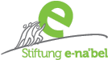

Hast Du eine gute Idee? Und fehlt Dir das nötige Startkapital?
Dann bist Du bei uns genau richtig. Die Stiftung e-na'bel bietet finanzielle Unterstützung (à fonds perdu) für innovative und nachhaltige Projekte auf Initiative von Studierenden an schweizerischen Hochschulen.
Wenn Deine Idee
- Innovationscharakter besitzt...
- Vielen Studierenden zugute kommt...
- Nachhaltig und über längere Zeit erhalten bleibt...
- Das studentische Leben fördert...
- Das Studium mit Hilfsmitteln erleichtert...
- ...und keine rauschende Party ist...
Eine Übersicht über unterstützte Ideen findest Du hier.